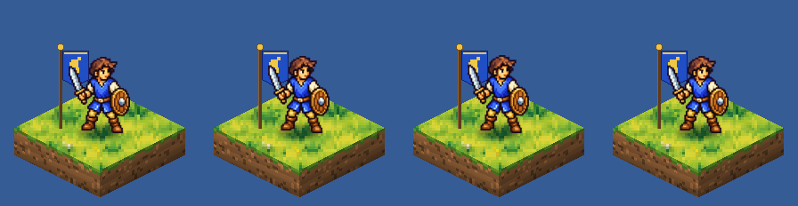
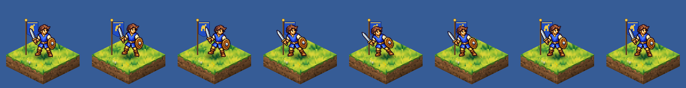
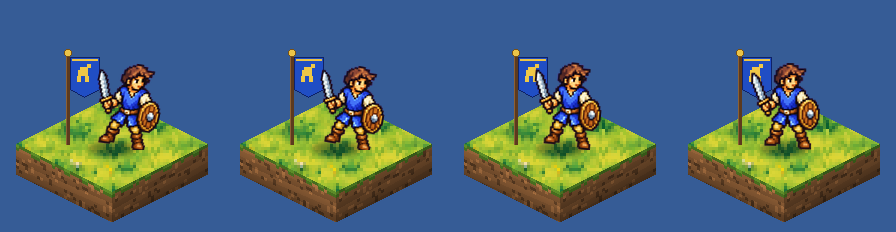
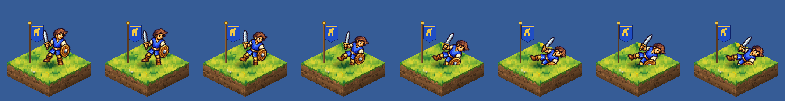
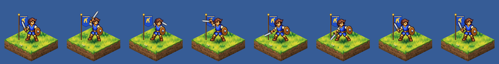
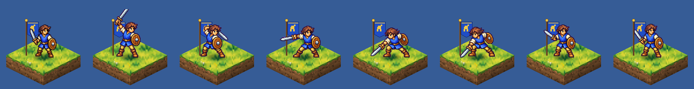

<title>FfH Animation Sprint</title>
<meta name="claude:viewport-fit-sides" content="cover">
<link rel="preconnect" href="https://fonts.googleapis.com">
<link rel="preconnect" href="https://fonts.gstatic.com" crossorigin>
<link rel="stylesheet" href="https://fonts.googleapis.com/css2?family=IBM+Plex+Mono:wght@400;500&family=IBM+Plex+Sans:ital,wght@0,400;0,500;0,600;1,400&family=Pixelify+Sans:wght@500;700&display=swap">
<style>/* Layout: a lab report in the house style of the October art sprint (navy ink, heraldic blue, banner gold).
   One reading column (~68ch) that widens to 1180px for players, tables and method dossiers. */
:root {
  --paper: #f1f4f9; --panel: #ffffff; --ink: #15203b; --muted: #56627c; --line: #d6dde9;
  --accent: #1f47ad; --gold: #9a6f0e; --stage: #dfe6d6; --stage-line: #c4cfb8;
  --good: #1b7f52; --warn: #a86400; --bad: #b3261e;
  --display: "Pixelify Sans", "Courier New", monospace;
  --body: "IBM Plex Sans", "Segoe UI", system-ui, sans-serif;
  --mono: "IBM Plex Mono", ui-monospace, Consolas, monospace;
  --step-0: 1rem; --step-1: 1.2rem; --step-2: 1.5rem; --step-3: 2.1rem; --step-4: 3rem;
}
@media (prefers-color-scheme: dark) {
  :root:not([data-theme="light"]) {
    --paper: #0d1323; --panel: #151d31; --ink: #e5eaf5; --muted: #9ba7c0; --line: #28334d;
    --accent: #93b2ff; --gold: #e0b44a; --stage: #1d2836; --stage-line: #2c3a4c;
    --good: #5cc795; --warn: #f0a94a; --bad: #ff8a80; color-scheme: dark;
  }
}
:root[data-theme="dark"] {
  --paper: #0d1323; --panel: #151d31; --ink: #e5eaf5; --muted: #9ba7c0; --line: #28334d;
  --accent: #93b2ff; --gold: #e0b44a; --stage: #1d2836; --stage-line: #2c3a4c;
  --good: #5cc795; --warn: #f0a94a; --bad: #ff8a80; color-scheme: dark;
}
* { box-sizing: border-box; }
body { background: var(--paper); color: var(--ink); font-family: var(--body); font-size: 16px; line-height: 1.6; }
.wrap { max-width: 1180px; margin-inline: auto; padding-left: max(16px, env(safe-area-inset-left, 0px)); padding-right: max(16px, env(safe-area-inset-right, 0px)); }
.read { max-width: 68ch; }
h1, h2, h3 { text-wrap: balance; line-height: 1.15; margin: 0; }
h1 { font-family: var(--display); font-weight: 700; font-size: clamp(2.1rem, 6vw, var(--step-4)); letter-spacing: 0.01em; }
h2 { font-family: var(--display); font-weight: 500; font-size: var(--step-3); }
h3 { font-size: var(--step-1); font-weight: 600; }
p { margin: 0; }
a { color: var(--accent); }
a:focus-visible, button:focus-visible, summary:focus-visible { outline: 2px solid var(--accent); outline-offset: 2px; }
code { font-family: var(--mono); font-size: 0.9em; }
.eyebrow { font-family: var(--mono); font-size: 0.8rem; letter-spacing: 0.08em; text-transform: uppercase; color: var(--muted); }
.num { text-align: right; font-variant-numeric: tabular-nums; font-family: var(--mono); font-size: 0.92em; white-space: nowrap; }
section.block { padding-block: 40px 8px; display: grid; gap: 18px; }
.top { padding-block: 48px 8px; display: grid; gap: 16px; }
.lede { font-size: var(--step-1); max-width: 62ch; }
.toc { display: flex; flex-wrap: wrap; gap: 8px 18px; font-size: 0.92rem; padding-top: 6px; border-top: 2px solid var(--gold); }
.toc a { text-decoration: none; padding-block: 8px; }
.toc a:hover { text-decoration: underline; }
.answer { background: var(--panel); border: 1px solid var(--line); border-top: 4px solid var(--accent); border-radius: 6px; padding-block: 22px; padding-inline: max(18px, 2.4vw); display: grid; gap: 18px; }
.answer > p { font-size: var(--step-1); max-width: 70ch; }
.kpis { display: grid; grid-template-columns: repeat(auto-fit, minmax(200px, 1fr)); gap: 14px 24px; margin: 0; }
.kpis div { display: grid; gap: 2px; border-left: 2px solid var(--line); padding-left: 12px; }
.kpis dt { font-size: 0.82rem; color: var(--muted); }
.kpis dd { margin: 0; font-family: var(--mono); font-size: var(--step-2); font-weight: 500; font-variant-numeric: tabular-nums; }
.kpis dd small { font-family: var(--body); font-size: 0.8rem; color: var(--muted); font-weight: 400; display: block; }
.findings { display: grid; gap: 14px; padding-left: 1.2em; margin: 0; max-width: 72ch; }
.findings li::marker { color: var(--gold); font-weight: 700; }
.gap-list, ul.plain { display: grid; gap: 8px; padding-left: 1.2em; margin: 0; max-width: 72ch; }

/* players */
.player { background: var(--panel); border: 1px solid var(--line); border-radius: 6px; display: grid; gap: 0; min-width: 0; }
.controls { display: flex; flex-wrap: wrap; gap: 6px; align-items: center; padding: 10px 12px; border-bottom: 1px solid var(--line); }
.controls .sep { flex: 0 0 10px; }
.controls button, .quiz button { font: 500 0.85rem var(--body); color: var(--ink); background: var(--paper); border: 1px solid var(--line); border-radius: 4px; padding: 6px 10px; min-height: 34px; cursor: pointer; }
.controls button[aria-pressed="true"], .quiz button[aria-pressed="true"] { background: var(--accent); border-color: var(--accent); color: var(--panel); }
.gridwrap { overflow-x: auto; }
table.anim-grid { border-collapse: collapse; }
table.anim-grid th, table.anim-grid td { padding: 8px 10px; border-bottom: 1px solid var(--line); vertical-align: middle; text-align: left; }
table.anim-grid thead th { font: 600 0.78rem var(--mono); letter-spacing: 0.06em; text-transform: uppercase; color: var(--muted); }
table.anim-grid tbody th { font-weight: 500; font-size: 0.9rem; min-width: 9.5rem; max-width: 12rem; }
table.anim-grid tbody tr:last-child > * { border-bottom: 0; }
.arm-id { display: inline-block; font-family: var(--display); font-weight: 700; color: var(--ink); background: var(--paper); border: 1px solid var(--line); border-radius: 3px; padding: 0 6px; margin-right: 6px; }
figure { margin: 0; display: grid; gap: 4px; min-width: 0; }
figure.cell canvas { display: block; background: var(--stage); border-radius: 3px; image-rendering: pixelated; }
figure.cell figcaption, figcaption { font: 0.75rem var(--mono); color: var(--muted); font-variant-numeric: tabular-nums; min-height: 1.2em; }
.none { color: var(--muted); font-size: 0.85rem; }
.feature { display: grid; grid-template-columns: repeat(auto-fit, minmax(min(100%, 280px), 1fr)); gap: 16px; padding: 14px; }
.feature figure canvas { width: 100%; height: auto; }
.videos { display: grid; grid-template-columns: repeat(auto-fit, minmax(min(100%, 340px), 1fr)); gap: 16px; }
video { width: 100%; height: auto; border-radius: 6px; border: 1px solid var(--line); background: var(--stage); image-rendering: pixelated; }

/* quiz */
.quizzes { display: grid; grid-template-columns: repeat(auto-fit, minmax(min(100%, 330px), 1fr)); gap: 16px; }
.quiz { background: var(--panel); border: 1px solid var(--line); border-radius: 6px; padding: 14px; display: grid; gap: 10px; }
.quiz .pair { display: flex; gap: 10px; flex-wrap: wrap; }
.quiz .pair figure { flex: 1 1 128px; }
.quiz .pair canvas { width: 100%; height: auto; }
.quiz .picks { display: flex; gap: 8px; }
.quiz [data-reveal] { font-size: 0.9rem; color: var(--muted); }

/* tables */
.tablewrap { overflow-x: auto; background: var(--panel); border: 1px solid var(--line); border-radius: 6px; }
table.results { border-collapse: collapse; width: 100%; min-width: 820px; font-size: 0.92rem; }
table.results th, table.results td { padding: 9px 12px; border-bottom: 1px solid var(--line); text-align: left; vertical-align: top; }
table.results th { font-size: 0.78rem; font-weight: 600; color: var(--muted); letter-spacing: 0.03em; }
table.results tbody tr:last-child td { border-bottom: 0; }
td.best { font-weight: 600; color: var(--good); }
.note { font-size: 0.85rem; color: var(--muted); max-width: 80ch; }

/* dossiers */
.method { border-top: 1px solid var(--line); padding-block: 28px 8px; display: grid; gap: 14px; }
.mhead { display: flex; gap: 14px; align-items: flex-start; }
.mhead > div { display: grid; gap: 4px; min-width: 0; }
.badge { font-family: var(--display); font-weight: 700; font-size: 1.15rem; padding: 5px 10px 3px; border-radius: 4px; color: var(--ink); background: var(--panel); border: 2px solid var(--accent); box-shadow: inset 0 -4px 0 var(--accent); flex: none; }
.verdict { color: var(--muted); max-width: 72ch; }
.facts { display: flex; flex-wrap: wrap; gap: 8px 28px; margin: 0; }
.facts div { display: grid; }
.facts dt { font-size: 0.75rem; color: var(--muted); letter-spacing: 0.04em; text-transform: uppercase; }
.facts dd { margin: 0; font-family: var(--mono); font-variant-numeric: tabular-nums; font-weight: 500; }
.prose { display: grid; gap: 10px; max-width: 76ch; }
.cols { display: grid; grid-template-columns: repeat(auto-fit, minmax(min(100%, 300px), 1fr)); gap: 24px; }
.cols > div { display: grid; gap: 10px; align-content: start; min-width: 0; }
pre { background: var(--panel); border: 1px solid var(--line); border-radius: 6px; padding: 14px; overflow-x: auto; font: 0.82rem/1.5 var(--mono); margin: 0; }
.strip { overflow-x: auto; border: 1px solid var(--line); border-radius: 6px; background: var(--stage); }
.strip img { display: block; max-width: none; height: auto; image-rendering: pixelated; }
details { background: var(--panel); border: 1px solid var(--line); border-radius: 6px; }
summary { cursor: pointer; padding: 10px 14px; font-size: 0.9rem; color: var(--muted); }
details[open] summary { border-bottom: 1px solid var(--line); }
details > div { padding: 12px 14px; display: grid; gap: 10px; }
footer { padding-block: 40px 56px; color: var(--muted); font-size: 0.85rem; }
@media (max-width: 560px) { .mhead { flex-direction: column; gap: 8px; } }
@media (prefers-reduced-motion: no-preference) { html { scroll-behavior: smooth; } }
</style>

<header class="top wrap">
  <p class="eyebrow">Research sprint · Fall from Heaven port · 20 October 2026</p>
  <h1>FfH Animation Sprint</h1>
  <p class="lede">Draft: results are still coming in.</p>
  <nav class="toc" aria-label="Sections"><a href="#answer">Short answer</a><a href="#final">Recommended set</a><a href="#compare">Side by side</a><a href="#quiz">Less stiff?</a><a href="#results">Results</a><a href="#methods">Method by method</a><a href="#recipe">Pipeline</a><a href="#how">How it ran</a><a href="#next">Not tested</a></nav>
</header>
<main>
<section class="block wrap" id="answer"><h2>The short answer</h2></section>
<section class="block wrap" id="final"><h2>The recommended set</h2></section>
<section class="block wrap" id="compare"><h2>Every method, side by side</h2>
  <p class="read">All players share one clock. Pause to step through frames; zoom changes every cell.</p>
  <div class="player" data-clock data-zoom="1"><div class="controls" role="toolbar" aria-label="Playback"><button type="button" data-ctl="play">Pause</button><button type="button" data-ctl="prev" aria-label="Previous frame">◀ frame</button><button type="button" data-ctl="next" aria-label="Next frame">frame ▶</button><button type="button" data-ctl="restart">Restart</button><span class="sep"></span><button type="button" data-ctl="zoom" data-v="1">1×</button><button type="button" data-ctl="zoom" data-v="2">2×</button><button type="button" data-ctl="zoom" data-v="3">3×</button><button type="button" data-ctl="tile">Grass tile</button></div><div class="gridwrap"><table class="anim-grid"><thead><tr><th></th><th scope="col">idle</th><th scope="col">strike</th><th scope="col">flinch</th><th scope="col">death</th></tr></thead><tbody><tr><th scope="row"><span class="arm-id">A0</span>Whole-sprite tween (control)</th><td><figure class="cell"><canvas data-arm="A0" data-anim="idle" width="128" height="128" aria-label="Whole-sprite tween (control), idle"></canvas><figcaption data-frame></figcaption></figure></td><td><figure class="cell"><canvas data-arm="A0" data-anim="strike" width="128" height="128" aria-label="Whole-sprite tween (control), strike"></canvas><figcaption data-frame></figcaption></figure></td><td><figure class="cell"><canvas data-arm="A0" data-anim="flinch" width="128" height="128" aria-label="Whole-sprite tween (control), flinch"></canvas><figcaption data-frame></figcaption></figure></td><td><figure class="cell"><canvas data-arm="A0" data-anim="death" width="128" height="128" aria-label="Whole-sprite tween (control), death"></canvas><figcaption data-frame></figcaption></figure></td></tr><tr><th scope="row"><span class="arm-id">R</span>Cut-out rig + mesh warp</th><td><p class="none">not made</p></td><td><figure class="cell"><canvas data-arm="R" data-anim="strike" width="128" height="128" aria-label="Cut-out rig + mesh warp, strike"></canvas><figcaption data-frame></figcaption></figure></td><td><p class="none">not made</p></td><td><p class="none">not made</p></td></tr><tr><th scope="row"><span class="arm-id">G0</span>Sheet, no pose guides</th><td><p class="none">not made</p></td><td><figure class="cell"><canvas data-arm="G0" data-anim="strike" width="128" height="128" aria-label="Sheet, no pose guides, strike"></canvas><figcaption data-frame></figcaption></figure></td><td><p class="none">not made</p></td><td><p class="none">not made</p></td></tr><tr><th scope="row"><span class="arm-id">G1</span>Sheet with pose blockouts</th><td><p class="none">not made</p></td><td><p class="none">not made</p></td><td><p class="none">not made</p></td><td><p class="none">not made</p></td></tr></tbody></table></div></div></section>
<section class="block wrap" id="quiz"><h2>Which looks less stiff?</h2></section>
<section class="block wrap" id="results"><h2>Results</h2><div class="tablewrap"><table class="results"><thead><tr><th>Method</th><th class="num">idle</th><th class="num">strike</th><th class="num">flinch</th><th class="num">death</th><th class="num">Overall</th><th class="num">Image API</th><th class="num">Calls</th><th class="num">Agent min</th></tr></thead><tbody><tr><td><span class="arm-id">A0</span>Whole-sprite tween (control)</td><td class="num"></td><td class="num"></td><td class="num"></td><td class="num"></td><td class="num"></td><td class="num">$0.00</td><td class="num">0</td><td class="num">0</td></tr><tr><td><span class="arm-id">R</span>Cut-out rig + mesh warp</td><td class="num"></td><td class="num"></td><td class="num"></td><td class="num"></td><td class="num"></td><td class="num">$0.00</td><td class="num">0</td><td class="num">0</td></tr><tr><td><span class="arm-id">G0</span>Sheet, no pose guides</td><td class="num"></td><td class="num"></td><td class="num"></td><td class="num"></td><td class="num"></td><td class="num">$0.23</td><td class="num">3</td><td class="num">8</td></tr><tr><td><span class="arm-id">G1</span>Sheet with pose blockouts</td><td class="num"></td><td class="num"></td><td class="num"></td><td class="num"></td><td class="num"></td><td class="num">$0.08</td><td class="num">1</td><td class="num">0</td></tr></tbody></table></div>
  <h3>Measured motion</h3><div class="tablewrap"><table class="results"><thead><tr><th>Method</th><th class="num">idle: non-rigid / overlap / drift</th><th class="num">strike: non-rigid / overlap / drift</th><th class="num">flinch: non-rigid / overlap / drift</th><th class="num">death: non-rigid / overlap / drift</th></tr></thead><tbody><tr><td><span class="arm-id">A0</span>Whole-sprite tween (control)</td><td class="num">0.03 / 0.0 / 0.4</td><td class="num">0.06 / 0.0 / 0.5</td><td class="num">0.05 / 0.0 / 0.5</td><td class="num">0.16 / 1.0 / 0.6</td></tr><tr><td><span class="arm-id">R</span>Cut-out rig + mesh warp</td><td class="num"></td><td class="num">0.28 / 1.3 / 0.4</td><td class="num"></td><td class="num"></td></tr><tr><td><span class="arm-id">G0</span>Sheet, no pose guides</td><td class="num"></td><td class="num">0.34 / 0.4 / 1.0</td><td class="num"></td><td class="num"></td></tr><tr><td><span class="arm-id">G1</span>Sheet with pose blockouts</td><td class="num"></td><td class="num"></td><td class="num"></td><td class="num"></td></tr><tr><td><span class="arm-id">FINAL</span>Recommended recipe</td><td class="num"></td><td class="num"></td><td class="num"></td><td class="num"></td></tr></tbody></table></div></section>
<section class="block wrap" id="methods"><h2>Method by method</h2>
<section class="method" id="m-a0">
  <header class="mhead"><span class="badge">A0</span><div><h3>Whole-sprite tween (control)</h3><p class="verdict"></p></div></header>
  <dl class="facts"><div><dt>Judge score</dt><dd>–</dd></div><div><dt>Animations</dt><dd>4 of 4</dd></div>
  <div><dt>Image API</dt><dd>$0.00</dd></div><div><dt>Calls</dt><dd>0</dd></div><div><dt>Agent time</dt><dd>0 min</dd></div></dl>
  <div class="prose"></div>
  <div class="videos"><figure><video src="assets/A0_sequence_3x.mp4" controls loop muted playsinline preload="metadata"></video><figcaption>Full sequence at 3×: idle, strike, idle, flinch, idle, death, corpse hold</figcaption></figure><figure><video src="assets/A0_vignette.mp4" controls loop muted playsinline preload="metadata"></video><figcaption>Combat vignette at 2×: blue strikes, red flinches; blue strikes again, red dies</figcaption></figure></div>
  <details><summary>Every frame at game scale</summary><div><figure><div class="strip"></div><figcaption>idle at 1×</figcaption></figure><figure><div class="strip"></div><figcaption>strike at 1×</figcaption></figure><figure><div class="strip"></div><figcaption>flinch at 1×</figcaption></figure><figure><div class="strip"></div><figcaption>death at 1×</figcaption></figure></div></details>
</section>
<section class="method" id="m-r">
  <header class="mhead"><span class="badge">R</span><div><h3>Cut-out rig + mesh warp</h3><p class="verdict"></p></div></header>
  <dl class="facts"><div><dt>Judge score</dt><dd>–</dd></div><div><dt>Animations</dt><dd>1 of 4</dd></div>
  <div><dt>Image API</dt><dd>$0.00</dd></div><div><dt>Calls</dt><dd>0</dd></div><div><dt>Agent time</dt><dd>0 min</dd></div></dl>
  <div class="prose"></div>
  
  <details><summary>Every frame at game scale</summary><div><figure><div class="strip"></div><figcaption>strike at 1×</figcaption></figure></div></details>
</section>
<section class="method" id="m-g0">
  <header class="mhead"><span class="badge">G0</span><div><h3>Sheet, no pose guides</h3><p class="verdict"></p></div></header>
  <dl class="facts"><div><dt>Judge score</dt><dd>–</dd></div><div><dt>Animations</dt><dd>1 of 4</dd></div>
  <div><dt>Image API</dt><dd>$0.23</dd></div><div><dt>Calls</dt><dd>3</dd></div><div><dt>Agent time</dt><dd>8 min</dd></div></dl>
  <div class="prose"></div>
  
  <details><summary>Every frame at game scale</summary><div><figure><div class="strip"></div><figcaption>strike at 1×</figcaption></figure></div></details>
</section>
<section class="method" id="m-g1">
  <header class="mhead"><span class="badge">G1</span><div><h3>Sheet with pose blockouts</h3><p class="verdict"></p></div></header>
  <dl class="facts"><div><dt>Judge score</dt><dd>–</dd></div><div><dt>Animations</dt><dd>0 of 4</dd></div>
  <div><dt>Image API</dt><dd>$0.08</dd></div><div><dt>Calls</dt><dd>1</dd></div><div><dt>Agent time</dt><dd>0 min</dd></div></dl>
  <div class="prose"></div>
  
  
</section></section>
<section class="block wrap" id="recipe"><h2>Recommended pipeline</h2></section>
<section class="block wrap" id="how"><h2>How the sprint ran</h2>
<div class="cols">
  <div>
    <h3>One shared contract</h3>
    <ul class="plain">
      <li>Every method animated the same accepted M7 swordsman (96×120, figure 86 px, facing lower-left) on a
        160×128 canvas anchored bottom-centre like an M7 unit, so idle frame 0 <em>is</em> the static sprite.</li>
      <li>A written beat sheet fixed the frames and timings: idle 4 frames looping at 250 ms; strike 8 frames,
        about 870 ms, hit on frame 4; flinch 4 frames, about 440 ms; death 8 frames, ending on a held corpse.</li>
      <li>One set of 2D joint positions per frame (<code>poses.json</code>) drove both the pose blockouts and the
        rig, so methods differ only in how the pixels are made.</li>
      <li>Shared code did everything around the pixels: keying the magenta, one scale per sheet calibrated from
        the reference cell, snapping each frame onto the ground row, metrics, previews, and the GIF and MP4
        sequences.</li>
    </ul>
  </div>
  <div>
    <h3>Calibration before the trials</h3>
    <ul class="plain">
      <li>One guided strike sheet went to three image models for $0.36 in 26 s. gpt-image-2.5-sunburst kept the
        reference cell almost untouched (scale 1.004, silhouette overlap 0.97); gpt-image-2.5-flare redrew it and
        drew its bottom row 14 px off the ground; gpt-image-2 scaled everything up 19%.</li>
      <li>Sunburst does not accept <code>input_fidelity</code>. High quality looked the same as medium at twice
        the price. Grey mannequins worked as well as coloured blockouts.</li>
      <li>Frozen for every image-model method: sunburst, medium, 1536×1024, two variants per call, the roster
        sheet as the second image.</li>
    </ul>
  </div>
</div>
</section>
<section class="block wrap" id="next"><h2>Not tested yet</h2>
<ul class="gap-list read">
  <li><strong>Video models.</strong> Sora 2 and Sora 2 Pro were shut down on 24 September 2026 and the
    <code>/v1/videos</code> endpoint returns 404 for this key, so image-to-video-to-frames could not be tried.</li>
  <li><strong>Local diffusion with pose control</strong> (SDXL or Flux with an OpenPose ControlNet and an
    IP-Adapter for identity) on your RTX 4080. This container has no GPU.</li>
  <li><strong>Sprite-animation services</strong> such as PixelLab's skeleton animation or Retro Diffusion. They need
    an account and an API key.</li>
  <li><strong>Other facings.</strong> Every animation here faces lower-left; the engine can mirror for lower-right,
    but the two upper facings need back views.</li>
  <li><strong>A second unit.</strong> The recipe was only proven on the swordsman; a robed caster, an archer and a
    big monster are the obvious next checks.</li>
  <li><strong>Engine integration.</strong> The client does not load M7 sprites yet; the spec here (canvas, anchor,
    manifest with per-frame ms and a hit event) is written so a loader can use it directly.</li>
</ul>
</section>
</main>
<footer class="wrap"><p></p></footer>

<script>window.SPRINT = {"tile":"assets/tile_grass.png","arms":[{"id":"FINAL","name":"Recommended recipe","family":"recipe","anims":{},"files":{},"metrics":{},"spend":{"usd":0.0,"calls":0,"images":0},"minutes":{}},{"id":"A0","name":"Whole-sprite tween (control)","family":"code","anims":{"idle":{"sheet":"assets/A0_idle.png","ms":[250,250,250,250],"hit":null,"loop":true,"hold":false},"strike":{"sheet":"assets/A0_strike.png","ms":[100,120,160,50,120,120,100,100],"hit":4,"loop":false,"hold":false},"flinch":{"sheet":"assets/A0_flinch.png","ms":[80,120,120,120],"hit":null,"loop":false,"hold":false},"death":{"sheet":"assets/A0_death.png","ms":[80,120,140,200,80,80,80,400],"hit":null,"loop":false,"hold":true}},"files":{"sequence_3x.mp4":"assets/A0_sequence_3x.mp4","vignette.mp4":"assets/A0_vignette.mp4"},"metrics":{"idle":{"nonrigid_mean":0.034,"overlap_index":0.0,"drift_mean":0.38,"boil_mean":16.61,"n_gate_flags":0},"strike":{"nonrigid_mean":0.062,"overlap_index":0.0,"drift_mean":0.47,"boil_mean":105.75,"n_gate_flags":0},"flinch":{"nonrigid_mean":0.053,"overlap_index":0.0,"drift_mean":0.54,"boil_mean":92.55,"n_gate_flags":0},"death":{"nonrigid_mean":0.158,"overlap_index":1.0,"drift_mean":0.56,"boil_mean":101.7,"n_gate_flags":0}},"spend":{"usd":0.0,"calls":0,"images":0},"minutes":{"all four animations":0.011666666666666667}},{"id":"R","name":"Cut-out rig + mesh warp","family":"code","anims":{"strike":{"sheet":"assets/R_strike.png","ms":[100,120,160,50,120,120,100,100],"hit":4,"loop":false,"hold":false}},"files":{},"metrics":{"strike":{"nonrigid_mean":0.283,"overlap_index":1.299,"drift_mean":0.41,"boil_mean":86.31,"n_gate_flags":0}},"spend":{"usd":0.0,"calls":0,"images":0},"minutes":{}},{"id":"G0","name":"Sheet, no pose guides","family":"model","anims":{"strike":{"sheet":"assets/G0_strike.png","ms":[100,120,160,50,120,120,100,100],"hit":4,"loop":false,"hold":false}},"files":{},"metrics":{"strike":{"nonrigid_mean":0.345,"overlap_index":0.433,"drift_mean":0.97,"boil_mean":123.33,"n_gate_flags":0}},"spend":{"usd":0.2345,"calls":3,"images":6},"minutes":{"strike":8.025}},{"id":"G1","name":"Sheet with pose blockouts","family":"model","anims":{},"files":{},"metrics":{},"spend":{"usd":0.078,"calls":1,"images":2},"minutes":{}}],"scores":{},"spend_total":0.67};</script>
<script>/* Sprite-sheet animation players for the sprint report.
   Data: window.SPRINT = {tile, arms: [{id, name, anims: {idle: {sheet, ms: [...], hit, loop, hold}}}]}
   Every <canvas data-arm data-anim> on the page becomes a player. Canvases inside the same [data-clock] group
   share one clock and one control bar ([data-ctl] buttons inside that group). */
(function () {
  const S = window.SPRINT;
  const ARM = Object.fromEntries(S.arms.map((a) => [a.id, a]));
  const FW = 160, VX = 16, VW = 128, VH = 128;            // frame width; view = canvas x 16..144 (the safe region)
  const TAIL = { idle: 0, strike: 600, flinch: 600, death: 1600 };
  const reduce = window.matchMedia && window.matchMedia('(prefers-reduced-motion: reduce)').matches;
  const cache = {};
  const img = (src) => { if (!cache[src]) { const i = new Image(); i.src = src; cache[src] = i; } return cache[src]; };
  const tile = img(S.tile);

  function timeline(arm, anim) {
    const A = ARM[arm].anims[anim];
    const seg = []; let t = 0;
    A.ms.forEach((m, i) => { seg.push({ sheet: A.sheet, i, a: t, b: t + m, hit: A.hit === i }); t += m; });
    const tail = TAIL[anim];
    if (tail) {
      const idle = ARM[arm].anims.idle;
      if (anim === 'death') seg.push({ sheet: A.sheet, i: A.ms.length - 1, a: t, b: t + tail, tail: true });
      else seg.push({ sheet: idle ? idle.sheet : A.sheet, i: 0, a: t, b: t + tail, tail: true });
      t += tail;
    }
    return { seg, total: t, n: A.ms.length };
  }

  function Cell(cv) {
    this.cv = cv; this.ctx = cv.getContext('2d');
    this.arm = cv.dataset.arm; this.anim = cv.dataset.anim;
    this.tl = timeline(this.arm, this.anim);
    this.step = 0; this.label = cv.parentElement.querySelector('[data-frame]');
  }
  Cell.prototype.draw = function (seg, zoom, showTile) {
    const c = this.cv, x = this.ctx;
    if (c.width !== VW * zoom) { c.width = VW * zoom; c.height = VH * zoom; c.style.width = VW * zoom + 'px'; c.style.height = VH * zoom + 'px'; }
    x.imageSmoothingEnabled = false;
    x.clearRect(0, 0, c.width, c.height);
    if (showTile && tile.complete && tile.naturalWidth) {
      x.drawImage(tile, (80 - 96 - VX) * zoom, (126 - 54) * zoom, tile.naturalWidth * zoom, tile.naturalHeight * zoom);
      x.fillStyle = 'rgba(10,20,10,0.28)';
      x.beginPath(); x.ellipse((80 - VX) * zoom, 124 * zoom, 24 * zoom, 7 * zoom, 0, 0, Math.PI * 2); x.fill();
    }
    const im = img(seg.sheet);
    if (im.complete && im.naturalWidth) x.drawImage(im, seg.i * FW + VX, 0, VW, VH, 0, 0, VW * zoom, VH * zoom);
    if (this.label) {
      const A = ARM[this.arm].anims[this.anim];
      this.label.textContent = seg.tail ? (this.anim === 'death' ? 'hold' : 'idle') :
        `frame ${seg.i}/${A.ms.length - 1} · ${A.ms[seg.i]} ms${seg.hit ? ' · hit' : ''}`;
    }
  };
  Cell.prototype.at = function (t) {
    const tt = t % this.tl.total;
    return this.tl.seg.find((s) => tt >= s.a && tt < s.b) || this.tl.seg[0];
  };

  function Group(root) {
    this.root = root;
    this.cells = Array.from(root.querySelectorAll('canvas[data-arm]')).map((c) => new Cell(c));
    this.zoom = +(root.dataset.zoom || 2); this.tile = root.dataset.tile !== 'off';
    this.playing = !reduce; this.t0 = performance.now(); this.tp = 0;
    root.querySelectorAll('[data-ctl]').forEach((b) => b.addEventListener('click', () => this.ctl(b)));
    this.sync();
  }
  Group.prototype.ctl = function (b) {
    const k = b.dataset.ctl;
    if (k === 'play') { this.playing = !this.playing; if (this.playing) this.t0 = performance.now() - this.tp; }
    if (k === 'prev' || k === 'next') {
      if (this.playing) { this.playing = false; this.cells.forEach((c) => { c.step = c.at(this.tp).i; }); }
      this.cells.forEach((c) => { const n = c.tl.n; c.step = (c.step + (k === 'next' ? 1 : n - 1)) % n; });
    }
    if (k === 'restart') { this.t0 = performance.now(); this.tp = 0; this.playing = true; }
    if (k === 'zoom') this.zoom = +b.dataset.v;
    if (k === 'tile') this.tile = !this.tile;
    this.sync();
  };
  Group.prototype.sync = function () {
    this.root.querySelectorAll('[data-ctl="play"]').forEach((b) => { b.textContent = this.playing ? 'Pause' : 'Play'; b.setAttribute('aria-pressed', String(!this.playing)); });
    this.root.querySelectorAll('[data-ctl="zoom"]').forEach((b) => b.setAttribute('aria-pressed', String(+b.dataset.v === this.zoom)));
    this.root.querySelectorAll('[data-ctl="tile"]').forEach((b) => b.setAttribute('aria-pressed', String(this.tile)));
  };
  Group.prototype.frame = function (now) {
    if (this.playing) this.tp = now - this.t0;
    for (const c of this.cells) {
      const seg = this.playing ? c.at(this.tp) : (c.tl.seg.find((s) => s.i === c.step && !s.tail) || c.tl.seg[0]);
      c.draw(seg, this.zoom, this.tile);
    }
  };

  const groups = Array.from(document.querySelectorAll('[data-clock]')).map((g) => new Group(g));
  function loop(now) { groups.forEach((g) => g.frame(now)); requestAnimationFrame(loop); }
  requestAnimationFrame(loop);
  window.SPRINT_GROUPS = groups;

  // blind "which is less stiff?" pairs
  document.querySelectorAll('[data-quiz]').forEach((q) => {
    const out = q.querySelector('[data-reveal]');
    q.querySelectorAll('[data-pick]').forEach((b) => b.addEventListener('click', () => {
      q.querySelectorAll('[data-pick]').forEach((x) => x.setAttribute('aria-pressed', String(x === b)));
      const left = q.dataset.left, right = q.dataset.right;
      const nm = (id) => (ARM[id] ? ARM[id].name : id);
      out.hidden = false;
      out.textContent = `Left was ${nm(left)}; right was ${nm(right)}. You picked ${b.dataset.pick === 'L' ? nm(left) : nm(right)}.`;
      q.classList.add('answered');
    }));
  });
})();
</script>
